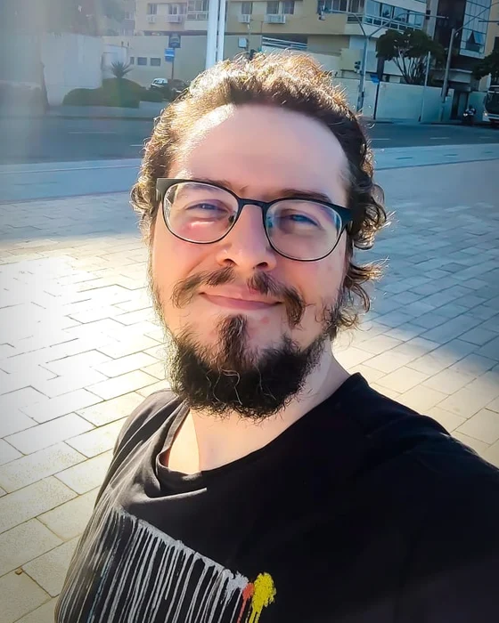
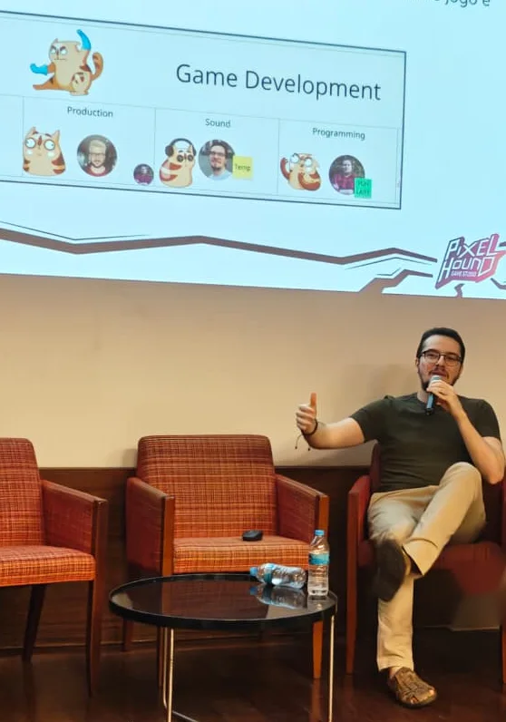
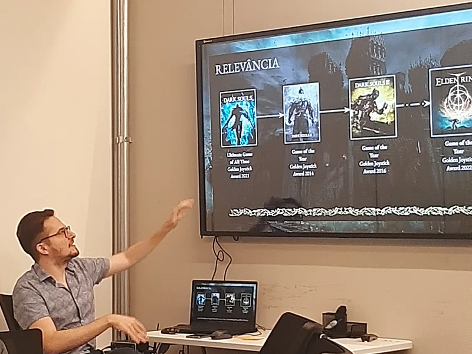

About
Hi, I'm Daniel.
Game designer and lifelong player. I design games holistically, making mechanics, lore and feel work together to deliver what the game promises.
I've loved games since I was a kid, playing Street Fighter II on a Sega Genesis and kicking the air along with Ken. I never stopped. When I'm not working, I'm playing or watching video essays and reviews, trying to understand why a game works for some players and not for others, and whether it delivers the experience it promises.
The games that marked me most pulled me into their worlds in a way others couldn't: Metroid Prime, The Witcher 3, World of Warcraft. But I also love mechanical games: fighting games, roguelikes, the Dark Souls series. I don't have a favorite genre. I have favorite games, each one delivering something no other game does.
There's no Daniel without games.

How I design
I think holistically: a design decision ties into mechanics, lore and context, and each part pushes back on the others, so my process runs in circles rather than in a line. I believe the best games come from care, study and iteration, and I'd rather show an idea than describe it, so I prototype with AI-assisted development (Claude) and learn from how a design feels.
Career
-
2024 to now
Co-Founder, Creative Director & Game Designer · Pixel Hound Studios
Lead game designer on Across the Abyss: Voidborn (Steam, 2024), taking an existing prototype to launch with its combat, bosses and enemies, and on Mars Incremental (Steam, Q1 2027).
-
2022 to 2024
Senior Game Designer · Hoplon
Seven shipped mobile games with publishers, five of them as lead designer, from high concept to post-launch balancing.
-
2020 to 2022
Game Designer · PUGA Studios
Economies, combat, content and levels for NDA-protected mobile, PC and console projects.
-
2018 to 2019
Internships & design studies · PUGA Studios, CESAR
Game design intern at PUGA Studios, where I designed Carnavalência with Brazil's Ministry of Culture, and design intern at CESAR. Started my Design degree at CESAR School (Bachelor's, 2018 to 2022) and won GameJamPlus Recife 2019 with Statue Knight.
-
2016 to 2017
Game Developer · Diorama Digital
Sole programmer of a mobile infinite runner, and designed and developed a mobile VR experience.

Awards & education
- SBGames 2022, Best Papers 3rd place short paper in Arts & Design, on emergent behavior in Elden Ring
- GameJamPlus Recife 2019 1st place with Statue Knight
- Bachelor's Degree in Design CESAR School, 2018 to 2022
- Bachelor's Degree in Law UFPE, 2012 to 2017

What's next
With Mars Incremental heading to launch, I'm open to my next challenge: focusing fully on design, on a team that values craft, in systems, content or combat design. I'm based in Recife, Brazil, and open to relocating to the US, Canada or Europe.
Available nowEnglish: full professional proficiency